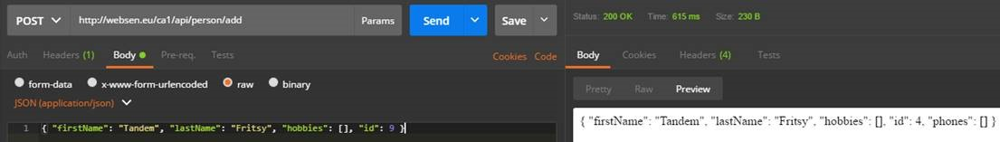
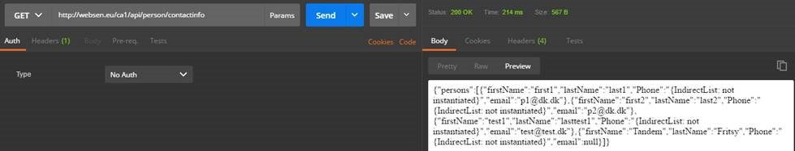
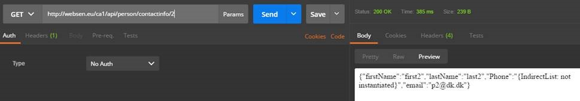
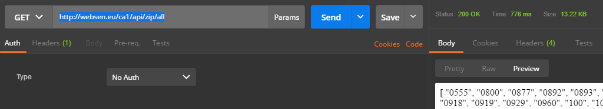
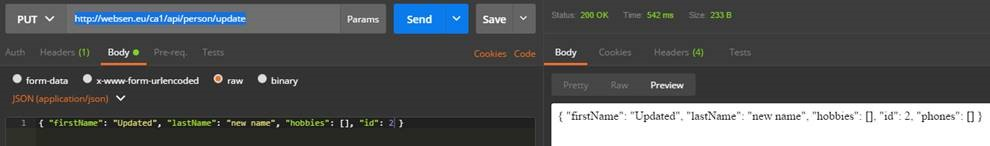
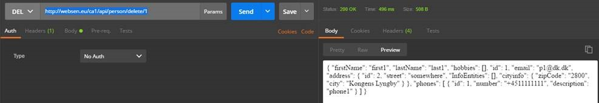

REST API Documentation
We have decided to make a REST-class to each of the facdes, so we consistently build the system with a uniform structure
The data will be converted 'from Gson to Json' and 'from Json to Gson' by calling the JsonConverter-class
The PersonResource-class contains a fully CRUD and it is possible to test all 4 operations from Postman
Shows an example for REST-API to get a person
| Proces | Description |
|---|---|
| Title |
|
| URL |
|
| Method |
|
| Annotations |
|
| Data Parameters |
|
| Succes Response |
|
| Error Response |
|
| Sample calls |
|
| Note to the REST-API |
JSON Converter
|
| Note |
http://websen.eu/ca1/api/person/add: http://websen.eu/ca1/api/person/contactinfo http://websen.eu/ca1/api/person/contactinfo/2 (id nummer 1 er slettet fra databasen) http://websen.eu/ca1/api/person/delete/{id} http://websen.eu/ca1/api/person/update Results from Postman from the url's above:       |